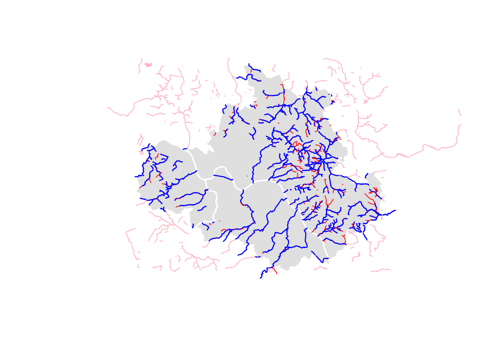
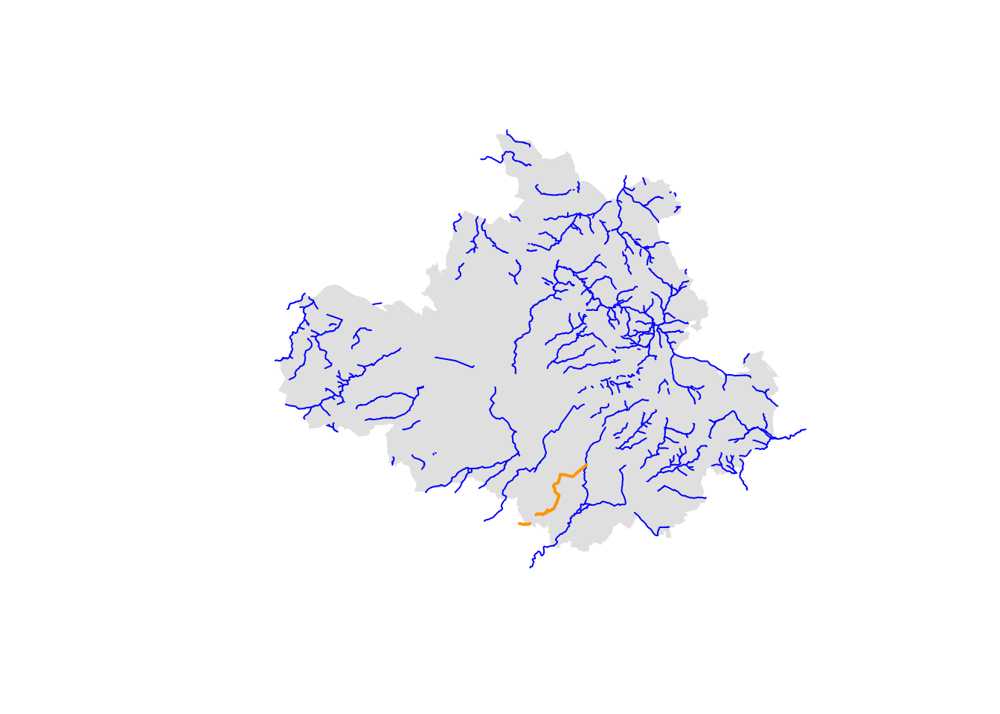

city_name <- "Dresden"
city_bb <- get_osm_bb(city_name)
crs <- get_utm_zone(city_bb)
city_boundary <- get_osm_city_boundary(city_bb, city_name, crs)Delineating the stream corridors of Dresden
Data retrieval
We get the city boundary of Dresden. We will use this both for visualisation and for filtering the stream network.
We also retrieve the main river network for visualisation purposes.
river_centerline <- osmdata_as_sf("waterway", "river", city_bb)
river_centerline <- river_centerline$osm_lines |>
st_geometry() |>
st_transform(crs)Finally, we retrieve the full stream network
stream_centerline <- osmdata_as_sf("waterway", "stream", city_bb)
stream_centerline <- stream_centerline$osm_lines |>
st_transform(crs)Data pre-processing
Before analysing the stream network, we need to clean it by removing parts of it that fall outside the city boundaries. We also remove segments that do not have a name. Teh plot below shows the two types of removed segments in pink and red, respectively.

The remaining network is grouped by name, so that each named stream is one feature. The following plot shows the resulting stream network in blue with the Geberbach stream highlighted in orange.
plot(city_boundary, col = "grey90", border = NA)
plot(stream_centerline_grouped$geometry, col = "blue", lwd = 1, add = TRUE)
plot(stream_centerline_geberbach, col = "orange", lwd = 2, add = TRUE)
Delineation
delineate_stream <- function(stream, city_bb, streets, railways,
network_buffer = 5000, dem_buffer = 1000,
buildings_buffer = 100) {
stream <- list(centerline = stream$geometry, surface = NULL)
aoi_network <- get_river_aoi(stream, city_bb, network_buffer)
aoi <- reproject(aoi_network, crs)
highway_values <- c("motorway", "secondary", "primary", "tertiary",
"residential")
streets <- get_osm_streets(aoi_network, highway_values = highway_values,
crs = crs)
railways <- get_osm_railways(aoi_network, crs = crs)
network_edges <- dplyr::bind_rows(streets, railways)
network <- as_network(network_edges)
aoi_dem <- CRiSp:::buffer(aoi_network, dem_buffer)
dem <- get_dem(aoi_dem, crs = crs)
corridor <- delineate_corridor(network, stream$centerline, NULL, aoi,
max_width = network_buffer,
dem = dem, capping_method = "shortest-path")
initial_corridor <- CRiSp:::initial_corridor(
stream$centerline,
method = "valley", buffer = NULL,
dem = get_dem(city_bb, crs = crs),
bbox = as_bbox(CRiSp:::buffer(aoi_network, 2500)) |>
sf::st_transform(crs))
buffer_corridor <- 100
corridor_buffer <- sf::st_buffer(corridor, buffer_corridor)
network_filtered <- CRiSp:::filter_network(network, corridor_buffer)
segments <- delineate_segments(corridor, network_filtered, stream$centerline)
aoi_buildings <- get_river_aoi(stream, city_bb, buildings_buffer)
buildings <- get_osm_buildings(aoi_buildings, crs = crs)
riverspace <- delineate_riverspace(buildings, stream$centerline)
list(
initial_corridor = initial_corridor,
corridor = corridor,
segments = segments,
riverspace = riverspace
)
}
# delineation_geberbach <- delineate_stream(stream_centerline_grouped[7, ], city_bb)delineations <- vector("list", length = nrow(stream_centerline_grouped))
for (i in 1:length(delineations)) {
delineations[[i]] <- tryCatch(delineate_stream(stream_centerline_grouped[i, ],
city_bb),
error = function(e) NULL)
}
n_delineated <- lapply(delineations, \(x) !is.null(x)) |> unlist() |> sum()
n_total <- length(delineations)
sprintf("%i out of %i delineations successful", n_delineated, n_total)lapply(delineations, \(x) if (!is.null(x)) {
plot(x$corridor)
plot(x$initial_corridor, add = TRUE, col = "grey", border = NA)
plot(x$riverspace, col = "lightgreen", border = NA, add = TRUE)
plot(x$corridor, lwd = 3, add = TRUE)
plot(x$segments, add = TRUE)
})initial_corridor_geberbach <- CRiSp:::initial_corridor(
c(stream_centerline_geberbach, NULL)$geometry,
method = "valley", buffer = NULL,
dem = get_dem(city_bb, crs = crs),
bbox = as_bbox(CRiSp:::buffer(aoi_network, 2500)) |>
sf::st_transform(crs)) |> plot()initial_corridor_1 <- CRiSp:::initial_corridor(
stream$centerline[1],
method = "valley", buffer = NULL,
dem = get_dem(city_bb, crs = crs),
bbox = as_bbox(CRiSp:::buffer(aoi_network, 2500)) |>
sf::st_transform(crs))